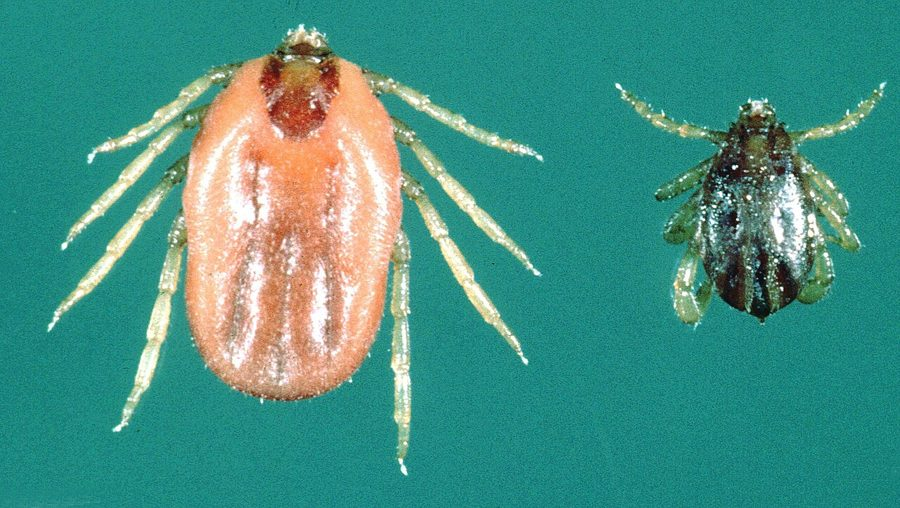

किलनीCattle Tick
Rhipicephalus microplus · Ixodidae · SPD-0019

- Scientific name
- Rhipicephalus microplus (Canestrini, 1888)
- Family
- Ixodidae
- Hindi
- किलनी
- Local names
- kilni, kilni keeda, chichdi, chichad, cattle tick
- Status here
- native
- Movement
- Resident, here all year
- IUCN
- not evaluated
- Review
- audited and independently read
When to look कब देखें
Present all year.
किलनी / Cattle Tick
Rhipicephalus microplus (Canestrini, 1888) — Ixodidae
किलनी — यह बहुत छोटा, भूरा जानवर है जो गायों और भैंसों की खाल पर छिपा रहता है और उनका खून चूसता है। गाँवों में यह बहुत आम है और किसानों के पशुओं को बहुत नुकसान पहुँचाता है। किलनियाँ सिर्फ परेशानी नहीं देतीं — ये "थेलेरिओसिस" और "बेबेसिओसिस" नामक भयानक बीमारियाँ फैलाती हैं, जो पशुओं को बीमार कर देती हैं और कभी-कभी उनकी मौत भी कर देती हैं। इसीलिए किसान अपने पशुओं को किलनियों से बचाने के लिए विशेष दवाएँ लगाते हैं।
Quick Identification त्वरित पहचान
| Feature | Description |
|---|---|
| Size | Very small; unengorged adults 3–4 mm in length |
| Colour | Brown or reddish-brown; darker when engorged |
| Body shape | Oval, flattened; eight legs |
| Mouthparts | Hypostome with prominent denticles (tooth-like structures); palps are relatively short |
| Scutum | Shield-like plate on the anterior dorsum, ornamented with punctations |
| Attachment | Embedded in skin by mouthparts; may appear as a bump with the body protruding |
Field tip: Check cattle and buffalo for small brown bumps on the skin, particularly around the neck, udder, and ventral areas. The engorged tick appears grey-blue or swollen. Look for multiple ticks clustered together on the animal. The presence of ticks on cattle is essentially universal in Basti district.
हिंदी — कैसे पहचानें: गाय-भैंस पर छोटे-छोटे भूरे, दाने जैसे निशान। खूब खून चूसने पर फूल कर नीले-भूरे रंग के हो जाते हैं।
Morphology आकारिकी
Biometrics:
| Measurement | Range |
|---|---|
| Unfed adult length | 3.0–4.0 mm |
| Unfed adult width | 2.0–2.5 mm |
| Engorged female length | 10–12 mm |
| Engorged female weight | 150–250 mg |
Structure: Hard-bodied (hard tick, family Ixodidae). The dorsal surface is covered by a tough, leathery integument (skin). The scutum (shield-like plate) is reddish-brown and ornamented with punctations (small pits). The capitulum (head) contains the mouthparts: the hypostome (feeding stylet) is armed with prominent denticles that anchor the tick in the host's skin. The palps are short and surround the hypostome. Four pairs of legs are positioned laterally on the body.
Sexual dimorphism: Females are slightly larger and, when engorged with blood, expand to balloon-like proportions. Males remain smaller and less swollen even when feeding.
Life stages: Eggs are microscopic; nymphs (immature ticks) are 1–2 mm; adults are 3–4 mm unfed, 10–12 mm engorged.
Behaviour & Ecology व्यवहार और पारिस्थितिकी
An obligate parasite of cattle and buffalo, also occasionally feeding on sheep, goats, and wild ruminants. Adults quest (wait) on grass and vegetation in pastures, positioning themselves on the stems of grasses and bushes to contact passing hosts. Upon host contact, they climb onto the animal and locate sheltered areas (axillae, udder, perineum) where they embed their mouthparts and feed. Feeding is a slow process, lasting 7–21 days depending on stage and conditions. Females drop from the host after engorgement and lay thousands of eggs in damp soil or leaf litter. Nymphs and larvae complete their development in the environment and quest again for hosts.
This tick is strictly three-host; each life stage infects a different host individual.
हिंदी: घास पर बैठती है, गाय-भैंस से चिपक जाती है। 7-21 दिन तक खून चूसती है, फिर ज़मीन पर गिरती है और अंडे देती है।
Life Cycle / Phenology जीवन चक्र
| Stage | Duration |
|---|---|
| Egg (in soil) | 14–28 days |
| Larva (questing) | 1–3 days on host; 7–21 days of feeding |
| Nymph (off-host development) | 14–28 days |
| Nymph (on host feeding) | 7–14 days |
| Adult (off-host development) | 14–30 days |
| Adult (on-host feeding) | 7–21 days |
| Female egg-laying | 7–14 days |
| Total cycle | 2–3 months under ideal conditions |
Seasonal pattern: Year-round reproduction in warm zones. In eastern UP, populations peak in warm, humid months (June–October) and decline in cool, dry seasons.
Host Plants or Prey आहार
Blood diet:
- Cattle (Bos indicus and B. taurus) — primary host
- Buffalo (Bubalus amni) — preferred host
- Sheep and goats — secondary hosts
- Wild ruminants — occasionally
Predators / Natural Enemies शत्रु
- Predatory mites: Parasitid mites parasitize tick eggs and immature stages.
- Parasitoid wasps: Hymenopterans parasitize tick nymphs.
- Ants: Predatory ants feed on eggs and larvae.
- Vertebrates: Oxpeckers (birds) peck ticks from animals; toads and frogs eat fallen ticks.
Agricultural / Human Relevance कृषि प्रासंगिकता
Disease transmission: Cattle Tick as vector of theileriosis and babesiosis. Rhipicephalus microplus is the primary vector of Theileria annulata (theileriosis) and Babesia bigemina (bovine babesiosis) in South Asia. Both are protozoan haemoprotozoan diseases affecting cattle and buffalo.
Theileriosis is endemic in cattle-rearing regions of India, including Uttar Pradesh. Affected animals develop fever, anaemia, enlarged spleen and lymph nodes, reduced milk production, and weight loss. Mortality rates in susceptible animals can exceed 50 percent if untreated. The India Ministry of Agriculture guidelines identify theileriosis as a major cattle disease in pastoral and agricultural zones.
Babesiosis causes similar clinical signs: high fever, anaemia, jaundice, and haemoglobinuria (dark-coloured urine). Mortality is typically lower than theileriosis but economic losses are significant due to reduced productivity and treatment costs.
Direct parasitic damage: Beyond disease transmission, heavy tick burdens cause direct effects: blood loss (each tick may consume 200–300 mg of blood per engorgement), skin damage and secondary infections, stress and reduced feed intake, and reduced milk production (up to 20–30 percent loss with heavy infestations).
Control and prevention: Acaricides (tick-killing pesticides) are applied as dips, sprays, or spot-on treatments. Commonly used compounds include synthetic pyrethroids and organophosphates. Resistance to these compounds has emerged in many regions. Alternative approaches include: (1) pasture rotation to reduce larval accumulation; (2) hand-removal of ticks; (3) immunization against tick antigens (experimental); (4) selective breeding of tick-resistant cattle breeds.
हिंदी: थेलेरिओसिस और बेबेसिओसिस नामक बीमारियाँ फैलाती हैं। ये गायों-भैंसों में बुखार, कमज़ोरी, खून की कमी करती हैं। नियंत्रण: कीटनाशक दवा का छिड़काव, घूमते हुए चारागाह, और बीमार पशु का इलाज।
Expected Locally स्थानीय रूप से अपेक्षित
Not a field record. Written from published accounts for eastern Uttar Pradesh. No confirmed local sighting yet — if you have seen it, that is what the atlas needs.
अभी तक स्थानीय पुष्टि नहीं। यह विवरण प्रकाशित स्रोतों से है, किसी अवलोकन से नहीं।
Present on virtually every cattle and buffalo in Basti district. Tick burden is universal, with seasonal variation. Clinical signs of tick-borne disease (theileriosis or babesiosis) are expected in cattle during warm months. A record would be documentation of a theileriosis or babesiosis outbreak in cattle, with samples for laboratory confirmation (blood smear microscopy or molecular testing for Theileria or Babesia).
Distribution वितरण
Global range: Tropical and subtropical regions worldwide; the most widely distributed cattle tick globally.
In India: Present in all cattle and buffalo rearing regions; a major pastoral and agricultural pest.
In Uttar Pradesh: Ubiquitous in all districts with livestock.
In Basti district / eastern UP: Universal on cattle and buffalo; a persistent vector of tick-borne diseases.
Research Questions शोध प्रश्न
- What is the relationship between tick burden on cattle and milk production losses in a village? / गाय पर किलनियों की संख्या और दूध की पैदावार में क्या संबंध है? — Correlate tick counts with daily milk yield.
- Does rotational grazing reduce tick populations in pastures compared to continuous grazing? — Compare larval tick numbers in soil between rotated and continuous-grazing fields.
- What is the prevalence of theileriosis and babesiosis in cattle in the district? — Conduct blood smear surveys in villages.
- Are cattle breeds indigenous to eastern UP more resistant to tick infestation than imported breeds? — Compare tick burden on different breeds in the same village.
- What acaricides are currently most effective against local tick populations? — Bioassay of field-collected ticks against standard compounds.
Similar Species मिलती-जुलती प्रजातियाँ
| Species | How to tell apart | हिंदी |
|---|---|---|
| Hyalomma anatolicum (Hyalomma tick) | Larger (4–5 mm); legs have rings or bands; longer palps; more active on host | बड़ी, धारीदार पैर |
| Boophilus decoloratus (East Coast fever tick) | Smaller (2.5–3.5 mm); slightly different capitulum shape; preferred on sheep | भेड़ पर, छोटी |
Field rule: Abundant small brown tick (3–4 mm) on cattle and buffalo; found in clusters on neck, udder, and ventral areas: Cattle Tick.
Taxonomy & Classification वर्गीकरण
Original description. Canestrini described the Cattle Tick as Rhipicephalus microplus in 1888 in Prospezione Acarologica nella Provincia di Napoli. The type locality is uncertain but attributed to tropical regions. The genus name Rhipicephalus is from Greek rhipe (fan) and kephale (head), referring to the fan-like mouthparts. The species name microplus refers to the small size and simple structure.
Subspecies. Monotypic. However, genetic studies reveal population structure across its range.
Family and order placement. Order Acari (ticks and mites), family Ixodidae (hard ticks), subfamily Rhipicephalinae.
Phylogenetic notes. Rhipicephalus microplus is the most successful hard tick colonizer of domesticated cattle worldwide, suggesting recent adaptation to livestock.
IUCN status rationale. Not evaluated. A pandemic pest species of enormous economic importance.
Photo Gallery फोटो गैलरी
Photos needed आवश्यक फोटो
- [ ] Tick on cattle showing attachment site (गाय पर किलनी)
- [ ] Engorged tick showing grey-blue color (भरी हुई किलनी)
- [ ] Theileriosis-affected cattle showing clinical signs (बीमार गाय)
No photos yet — add field photos to media/species/cattle_tick/ and run node scripts/sync_photos.js.
References संदर्भ
- Canestrini, G. (1888). Prospezione Acarologica nella Provincia di Napoli. Società Italiana di Scienze Naturali, Milano.
- Bishopp, F.C. & Trembley, H.L. (1945). Distribution and hosts of the cattle tick. Journal of Economic Entomology 38: 301–312.
- de la Fuente, J., Antunes, S., Cabezas-Cruz, A., ... & Estrada-Peña, A. (2019). Rhipicephalus (Boophilus) microplus infection impact on cattle tick vaccine immunogenicity and transmission blocking efficacy of vaccine-induced antibodies. Parasites & Vectors 12: 165.
- Singh, R., Sharma, A., Singh, S., & Goel, R.K. (2016). Theileriosis: A disease of ruminants with global significance. Veterinary Medicine International 2016: 5632452.
- Ministry of Agriculture & Farmers Welfare, Government of India (2020). Guidelines for Prevention and Control of Theileriosis in India. Department of Animal Husbandry, New Delhi.
- GBIF Occurrence Data — Rhipicephalus microplus, India (2026).
Source file: species/fauna/spiders/cattle_tick.md